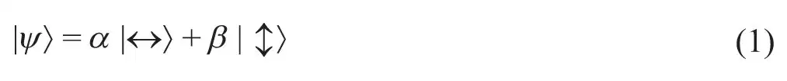
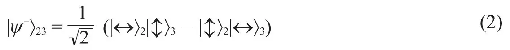
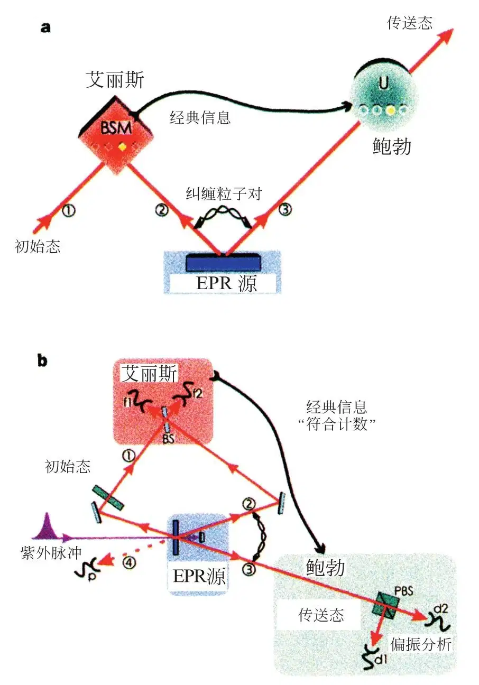
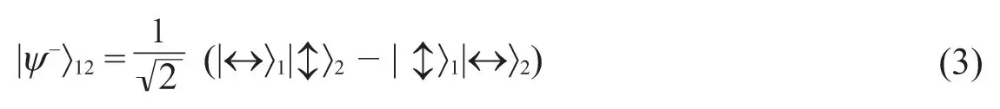
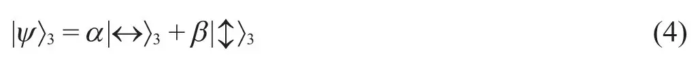
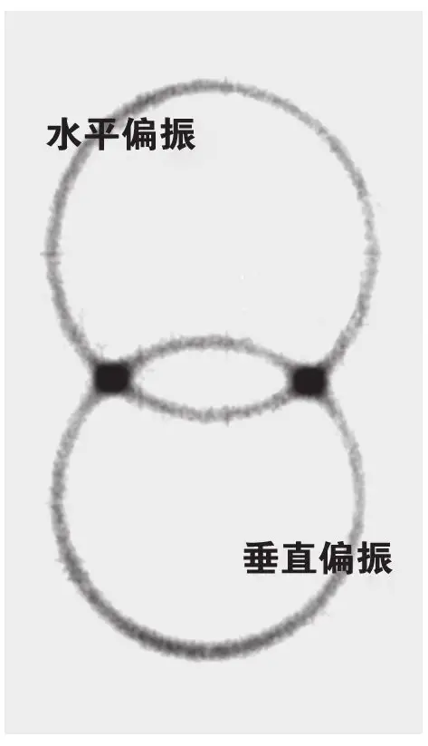
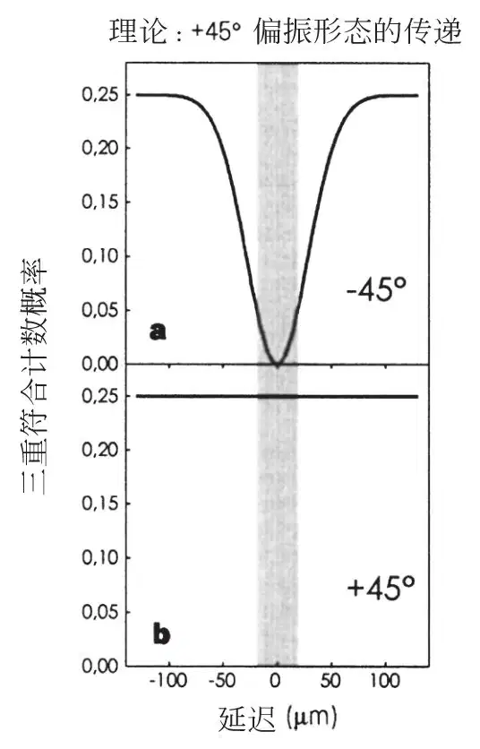
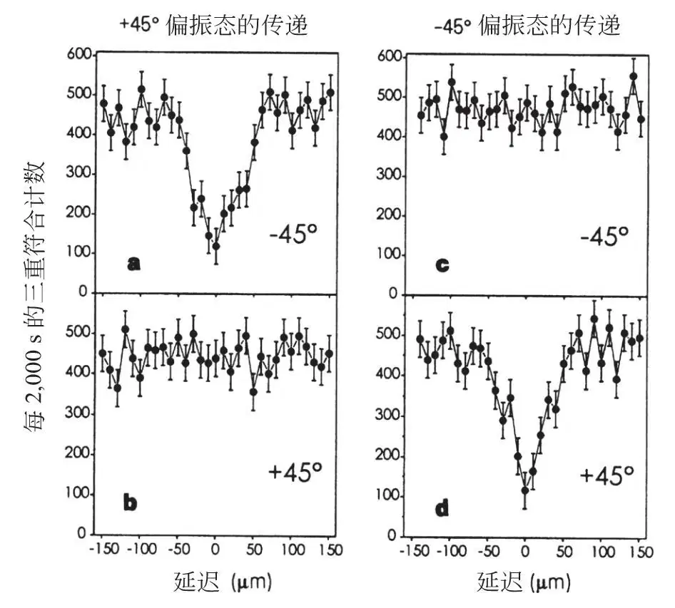
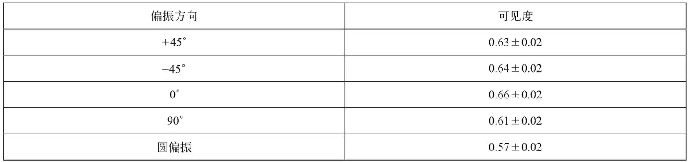
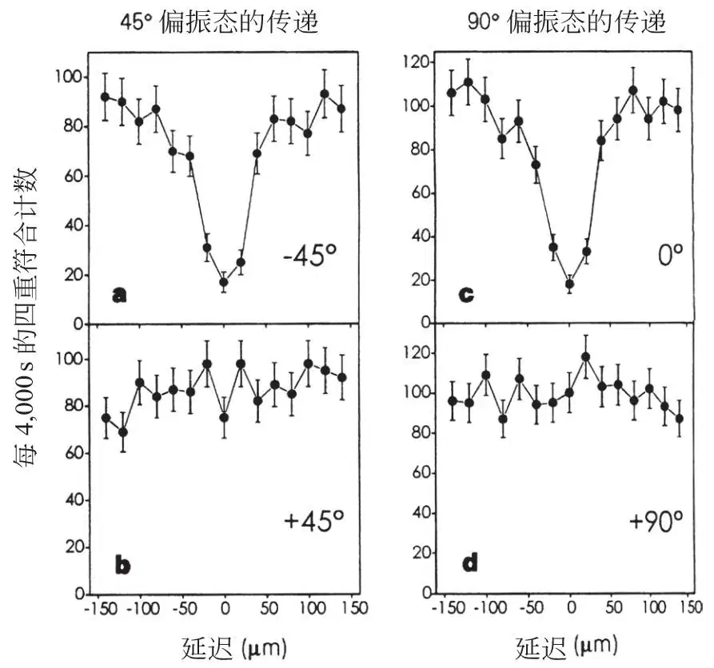

英文
英文鲍夫梅斯特等
编者按
基于量子物理的基本原理对信息以全新的方式进行操控，催生了量子信息技术，使我们有望实现超快速的量子计算和安全的量子密码。而由量子物理带来的其中一个神奇的现象是在远距离下量子态的瞬时转移：量子隐形传态。这项技术是利用纠缠态（在两个或多个粒子的纠缠态中，这些粒子的状态都是相互依赖的）的特性来实现的。在这篇文章中，来自因斯布鲁克大学的安东·蔡林格和他的同事们报道了第一个量子隐形传态的实验演示。这个实验是将一个光子的偏振态转移给远处另一个处在纠缠态的光子。自这个实验以后，如今已经可以在一百千米以上的距离实现量子隐形传态。 英文
我们实验演示了量子隐形传态，也就是将量子系统的状态传递到任意距离之外并加以重建。本次实验过程涉及三个光子，第一个光子携带将被转移的偏振信息。第二个和第三个光子处于纠缠态，对第一个和第二个光子进行联合测量，第三个光子就可以获得第一个光子的偏振信息。第三个光子与第一个光子之间的距离可以任意远。量子隐形传态将成为量子计算网络的关键组成。 英文
隐形传态是想通过在远处重现的方法来实现旅行的梦想。远距传送的对象可以完全由其性质来表示，在经典物理中这些性质可以由测量决定。要在一定距离之外造出对象的一个副本，我们并不需要原来的部分和零件，只要把扫描得到的信息传送过去用来重建对象就可以了。但是这样得到的原件的副本有多精确？如果那些部分和零件是电子，原子和分子呢？它们的个体量子性质会是什么情况？根据海森堡的测不准原理，这些个体量子性质是无法以任意精度测量的。 英文
本内特等[1]提出，一个粒子的量子态可以被转移到另一个粒子上，前提是在转移过程中关于这个态的信息不可知，这就是量子隐形传态过程。其前提条件可以由作为量子力学本质特征的纠缠[2]来实现。它描述了比任何经典的相关都要强的量子系统之间的关联。 英文
量子信息传送的可能性是新兴的量子通信和量子计算领域的基石之一[3]。虽然量子信息处理的理论描述发展很快，但是由于操纵量子系统的困难性，新方案的实验演示相对滞后。除了已经演示了充满希望的量子密码[4]（第一个被证实的保密通信方式）之外，我们还只是在前不久又成功演示了量子密集编码这种基于量子力学实现增强数据压缩的可能性[5]。实验进展如此之慢的主要原因在于，虽然存在产生纠缠光子对的方法[6]，但原子的纠缠到最近才被证实[7]，并且目前为止无法产生两个量子以上的纠缠态。 英文
本文中我们报道了量子隐形传态的首次实验证明。通过参量下转换产生纠缠光子对，并利用双光子干涉测量来分析纠缠，我们可以做到将量子特性（在我们的实验中是偏振态）从一个光子转移到另一个光子。本实验发展的方法将在量子通信领域以及未来量子力学基础检验中发挥重要作用。 英文
问题阐述
为了阐明量子信息转移的问题，我们假设艾丽斯有一个粒子处于某个量子态|ψ〉并且她希望远处的鲍勃也有一个粒子处于这个态。当然，一种可能的方式是直接把自己的粒子送到鲍勃那里。但是如果艾丽斯和鲍勃之间的通信通道不够好不足以保持必要的量子相干性，或者传送过程需要的时间太长（若|ψ〉是更复杂的或者更大的对象的态函数，就会很容易出现这些情况），艾丽斯和鲍勃能采取什么策略呢？ 英文
正如前面提到的一样，因为量子系统的态是不能完全由测量确定的，艾丽斯对|ψ〉所能进行的测量，都不能精确到让鲍伯能够重建这个态。量子叠加性原理可以使量子系统同时处于几个态的叠加。对量子系统进行测量会迫使它处于其中的一个态，这经常被称为投影假设。我们可以通过一个光子的例子来说明这个重要的量子特征。这个光子可以处于水平偏振或者垂直偏振，分别以|↔〉和|↕〉表示。其偏振态甚至可以是这两个态的普遍叠加

其中α和β是两个复数满足|α|2+|β|2=1。为了让这个例子更具普遍性，我们可以把公式（1）中的态|↔〉和|↕〉换作|0〉和|1〉，来表示任何双态量子系统的两个态。|0〉和|1〉的叠加被称为量子比特，以显示量子物理为信息科学引入新的可能性[8]。 英文
如果一个处于|ψ〉态的光子通过一个偏振分束器（这种器件反射水平偏振光而透射垂直偏振光），则在反射光束中找到该光子的概率是|α|2，在透射光束中找到该光子的概率是|β|2。测量的行为使得普通态函数|ψ〉被投影到|↔〉或者|↕〉上。我们的结论是：量子力学的规则，特别是投影假设，使得艾丽斯不可能对|ψ〉进行一次测量以得到所有必要的信息来重建这个态。 英文
量子隐形传态的概念
尽管量子力学的投影假设看上去阻止了艾丽斯将|ψ〉态提供给鲍勃的意图，本内特等[1]却意识到就是这个投影假设使得|ψ〉从艾丽斯到鲍勃的隐形传态成为可能。在隐形传态过程中，艾丽斯将对自己这边的量子态进行测量破坏，这时，鲍勃那边才接收到这个量子态，这个过程中，两个人都没有获知|ψ〉态的信息。最初由艾丽斯和鲍勃共享的处于纠缠态的辅助粒子对在这个隐形传态方案中起到关键作用。 英文
假定艾丽斯想要传送的粒子1处于初始态|ψ〉1=α|↔〉1+β|↕〉1（图1a），并且艾丽斯和鲍勃共享的纠缠粒子对，即粒子2和粒子3处于下列态中：

这个纠缠粒子对是|↔〉2|↕〉3态和|↕〉2|↔〉3态等量叠加的一个简单量子系统。纠缠态不包含任何个体粒子的信息，它仅仅表明两个粒子是处于正交的态。纠缠对的一个重要特性就是当对其中一个粒子进行测量而将其投影到比如说|↔〉上，另一个粒子的态就确定为|↕〉，反过来也是一样。对一个粒子的测量如何能够瞬间影响另一个可以是任意远的粒子的态？爱因斯坦还有其他很多杰出物理学家干脆不能接受这种“幽灵般的超距作用”。但是纠缠态的这个性质已经被很多实验所证实（请看参考文献9和10）。 英文

图1．表现量子隐形传态相关原理（a）和实验装置（b）的示意图。a，艾丽斯想把自己的量子系统也就是粒子1所处的初始态传送给鲍勃。艾丽斯和鲍勃共享一个从EPR源发出的辅助纠缠粒子对2和3。艾丽斯接着对初始粒子1和辅助对中的一个粒子进行一个联合贝尔态测量，将其投影到一个纠缠态上。在她将测量结果以经典信息形式传送给鲍勃后，他就可以对另一个辅助粒子进行幺正变换，使之处于初始粒子1的状态中。b，一束紫外线脉冲通过非线性晶体时产生了辅助光子对2和3。逆反射后第二次穿过晶体时这个紫外脉冲又产生一对光子，其中一个将被制备到待传递的光子1的初始态，另一个用作触发器，表示一个待传态的光子已经上路。于是，艾丽斯查看经过分束器BS后初始光子和一个辅助光子叠加时的符合计数。鲍勃在收到艾丽斯已经在探测器f1和f2处获得验证贝尔态|ψ－〉12的符合计数的经典信息后，就知道他的光子3已处于光子1的初始态中，并可用偏振分光器PBS和探测器d1和d2进行偏振分析来验证。探测器p提供光子正在路上的信息。 英文
隐形传态方案如下面所述。艾丽斯现有粒子2和处于初始态|ψ〉1的粒子1，粒子2与鲍勃处的粒子3处于纠缠态。关键之处是对粒子1和粒子2进行一个特定的测量，将它们投影到纠缠态上：

这仅仅是任意双粒子态可以分解成的四个可能的最大纠缠态之一。双粒子任意态在四个最大纠缠态组成的一组正交完备基中任何一个态上的投影测量叫贝尔态测量。公式3中的态和其他三个最大纠缠态的不同之处在于交换粒子1和粒子2将导致其符号改变。|ψ－〉12态的这个独特的反对称特征在实验确认也就是在这个态的测量中将起到重要作用。 英文
量子物理预言[1]当粒子1和2被投影到|ψ－〉12态时，粒子3将被即时投影到粒子1的初始态。原因如下：因为我们测量得知粒子1和2处于|ψ－〉12态中，所以我们知道无论粒子1处于任何态，粒子2一定处于正交态，也就是和粒子1的态正交的态中。但是我们一开始将粒子2和3置于|ψ－〉23态中，也就是说粒子2也和粒子3正交。要实现这一点唯一的可能就是粒子3处于和粒子1的初始态相同的态中。由此粒子3的终态就是

注意在贝尔态测量过程中粒子1因为与粒子2纠缠而失去了自身特征。因此艾丽斯这边的|ψ〉1态在隐形传态过程中被破坏。 英文
这个结果（公式4）值得进一步讨论。从粒子1到粒子3的量子信息的转移可以是通过任意距离，所以才有隐形传态的名字。实验证明量子纠缠能够建立在10千米量级的距离上[11]。注意隐形传态方案中艾丽斯不需要知道鲍勃在哪里。另外不光是艾丽斯，其他任何人都不用知道粒子1的初始态。在进行贝尔态测量时，它甚至可以是在量子力学意义上完全未定义的。正像本内特等[1]已经指出过的，当粒子1自己是一个纠缠对中的一员因而没有自己的明确定义的性质时，就是这种情况。这最终导致纠缠交换[12,13]。 英文
另外重要的一点是贝尔态测量不揭示任何一个粒子性质的任何信息。这是为什么利用相干双粒子叠加的量子隐形传态能够成功，而任何单粒子叠加的测量都会失败的原因。未能获取任一粒子的任何信息的事实，也是量子隐形传态并不违反量子不可克隆定理[14]的原因。在成功的隐形传态之后，粒子1不再处于初始态，因而粒子3确实是隐形传态的结果而不是一个克隆。 英文
一个完整的贝尔态测量不仅能给出两个粒子1和2处于反对称态的结果，我们还可能发现它们处于其他三个纠缠态中的任何一个的概率都是相等的25%。如果发生这种情况，粒子3就处于三个不同的态中的一个。接着鲍勃可以在通过经典通信通道收到艾丽斯获取的是哪一个贝尔态的信息后，通过选择相应的变换，在与粒子1所处态无关的情况下，将粒子3置于粒子1的初始态中。我们要着重强调，即使像前面所讨论的那样我们选择只确认四个贝尔态中的一个，隐形传态仍然可以成功实现，尽管只是在四分之一的事例中。 英文
实验的实现
实现隐形传态需要生成和测量纠缠态。任何实验实现都要面临这两个难题。到目前为止，能够作出纠缠态的实验技术寥寥无几，而且没有成功的实验程序来确认任何一种量子系统的所有四个贝尔态。虽然如此，纠缠光子对可以由简易方法产生并被投影到至少两个贝尔态上。 英文
我们通过参量下转换产生纠缠光子对2和3。在这项技术中，非线性晶体中进来一个泵浦光子可以即时衰变为两个光子。在二型参量下转换情形中，这两个光子处于公式2给出的态（图2）[6]。 英文

图2．二型参量下转换产生的光子（见正文）。相片与传播方向垂直。光子成对产生。顶圈的光子水平偏振，其严格相反的底圈同伴为垂直偏振。在相交的两点它们的偏振态是不明确的，我们只知道它们必须是不同的，这就导致纠缠。 英文
要将光子1和2投影到一个贝尔态上我们必须让它们变得不可区分。为实现这个不可区分性我们将这两个光子在分束器处叠加（图1b）。这样的话，如果它们从两边一边一个地入射，能不能做到出射时也是一边一个呢？显然这是可能的，只要它们都被反射或者都被透射就行。在量子物理中我们必须将这两个可能的振幅叠加。幺正性意味着两个光子都被反射的那个可能情形的振幅需要多加一个负号。这样的话这两个过程看上去互相抵消。但是只有对称入射态才是这种情况。对于反对称入射态，这两个可能情形要再加一个相对的负号，这样它们之间的干涉是相长的[15,16]。由此，只要将探测器放在分束器的每个输出端记录同时发生的响应（符合计数），就可以将光子1和2投影到反对称态|ψ－〉12[17-19]。 英文
为了确保不能通过到达时间来区分光子1和2，我们通过脉冲泵浦光束产生光子1和2并使其通过窄带宽滤波器来产生一个比泵浦脉冲长度长得多的相干时间[20]。在实验中泵浦脉冲持续时间为200 fs，重复率为76 MHz。观测下转换产生的光子（该光子波长为788 nm，带宽为4 nm）得到相干时间为520 fs。这里应当提到的是，由于光子1也是作为纠缠对的一部分产生的，可以用其同伴来显示它已被发出。 英文
如何用一个实验证明未知量子态被隐形传送？首先要证明隐形传态能够在一组（完备）基矢上成功实现，任何其他态都能分解到这组已知基矢上。偏振态的基矢只有两个成分，原理上我们可以把源发射的水平和垂直偏振作为基矢。但是因为这两个方向在我们实验中是优先方向，这种演示不能证明隐形传送对任何普遍叠加态都能实现。出于这个原因，在第一个实验中我们选择-45°和+45°两个线性偏振态作为拟传送态的基矢。它们都已经是水平和垂直偏振的叠加。其次，我们必须证明对这些基矢的叠加也能实现隐形传态。为此我们还证明了圆偏振的隐形传态。 英文
实验结果
在第一个实验中光子1处于45°偏振。在所有可能情形中，光子1和2被检测到处于|ψ－〉12态的概率是25%。一旦出现这种情形，隐形传态就应当实现。|ψ－〉12态的确认是通过置于分束器后面两个探测器f1和f2的符合计数来实现的（图1b）。 英文
如果我们探测到一个f1f2（探测器f1和f2之间的）符合事例，那么光子3应当也是45°偏振。光子3的偏振态的分析方法是让它通过一个选择+45°和-45°偏振的偏振分束器。若要证明隐形传态的实现，当探测器f1和f2响应时，必须只有偏振分束器+45°输出端的探测器d2有响应，也就是记录下了一次探测，而偏振分束器-45°输出端的探测器d1不应探测到光子。因此，一个三重符合计数d2f1f2（+45°偏振分析）的记录，加上三重符合计数d1f1f2（-45°偏振分析）的缺失，就成为光子1的偏振态已经被隐形传态到光子3的证据。 英文
为满足时间重叠条件，我们通过平移逆反射镜改变第一次和第二次下转换之间的延迟来微调光子2的到达时间（图1b）。用这种办法，我们逐渐进入分束器处时间重叠的区间，保证隐形传态发生。 英文
在隐形传态区间之外，光子1和2各自可能独立奔向f1或者f2。因此在f1和f2得到一个符合计数的概率是50%。这个概率是在隐形传态区间中的两倍。光子3因为是纠缠对中一员，所以不应有明确定义的偏振。这样的话，d1和d2都有50%的可能接收到光子3。这个简单的论证得到的结果是，在隐形传态区间之外，-45°偏振分析（d1f1f2符合计数）和+45°偏振分析（d2f1f2符合计数）都有25%的概率。图3总结了作为时间延迟函数的预测概率值。-45°分析下降到零（图3a）和+45°分析保持为一个常数（图3b），表征+45°偏振态的隐形传态得到成功实现。 英文

图3．两个贝尔态探测器（f1,f2）和分析被传递态的两个探测器之一的三重符合计数概率的理论预期。+45°光子偏振态传递的特征是：在零延迟处，-45°偏振分析探测器三重符合计数率（d1f1f2）有一个到零概率值的下降（a），而+45°分析探测器三重符合计数率（d2f1f2）保持为常数（b）。阴影区为隐形传态区间。 英文
图3中的理论预计图可以这样来简单理解：与隐形传态区间之外相比较，在延迟为零时，两个贝尔态探测器f1和f2的符合计数率下降一半；如此一来，如果光子3的偏振与其他光子完全无关，三重符合计数也应该降到一半。在图3a中曲线下降一直到零而在图3b中被填平成为平坦曲线，表明设计的隐形传态得到实现。 英文
需要指出的是，与光子1、2和3的产生同样可能发生的是单一源发出两对下转换光子。虽然这种情况中没有光子来自第一个源（光子1未出现），但是它对三重符合计数率仍有显著贡献。这些符合计数与隐形传态无关，可以用阻断光子1路径的办法确认。 英文
这一产生乱真二重和三重符合计数的过程发生的概率可以从实验参数估计。由实验确定的乱真三重符合计数的百分比是68%±1%。图4中的实验图形中我们已经扣除这个实验确定的乱真符合计数。 英文

图4．实验结果。在待传光子为+45°偏振（a和b）或者-45°偏振（c和d）的情况下，测量d1f1f2（-45°）和d2f1f2（+45°）三重符合计数率。画出的符合计数率是光子1和2分别到达艾丽斯的分束器的延迟的函数（见图1b），并扣除了乱真三重计数的贡献（见正文）。这些数据与图3对比，再加上其他偏振的类似结果（表1），证实了任意一个态都可被传递。 英文
图4左栏是+45°偏振光子的隐形传态的实验结果；我们应当把图4a和b与图3中的理论预计曲线相比较来看。-45°分析中的猛烈下降和+45°分析中的稳定信号表明光子3与光子1的偏振方向相同，证实了隐形传态的实现。 英文
-45°偏振的光子1的结果证明能够对一组完备的偏振基态实现隐形传态（图4右栏）。为了排除对实验结果的任何经典解释，我们用另外的实验进一步证实我们的方法是成功的。在这些附加实验中我们隐形传送了0°和90°的线偏振光子以及圆偏振光子，结果总结在附表1中。实验中与入射偏振正交方向的三重符合计数出现下降，表中列出了这个下降的可见度。 英文
表1. 三重符合计数下隐形传态的可见度

如前所述，这些可见度是扣除乱真三重符合计数引起的偏差之后得到的数值。实验上排除这些计数的办法是对三重计数再附加一个光子4计数的条件。这使得光子1实际上被投影到一个单粒子态上。我们将这个四重符合计数测量方法用到+45°和+90°偏振态这两个非正交态的隐形传态中。实验结果在图5中给出。得到的正交偏振态下降的可见度在70%±3%。这些可见度直接就是被传态光子在其本态的偏振度。这表示我们已经证明了单个光子的量子态的隐形传递。 英文

图5．四重符合计数率（未扣除背景）。对图4的三重符合计数附加一个光子4计数的条件（见图1b）消除了乱真三重计数的背景。a和b显示传递+45°偏振态的四重符合计数测量；c和d是+90°偏振态的结果。在没有去除背景的情况下，得到的可见度，也就是被传态光子的偏振度，是70%±3%。这两个非正交态的传递结果表明了我们已经证实单个光子的量子态的隐形传态。 英文
展望
我们的实验使用脉冲下转换产生的偏振纠缠光子对，并利用双光子干涉测量法来将一个光子的偏振态传递给另一个光子。但是隐形传态不只局限于这个系统。除了纠缠光子对或者纠缠原子对[7,21]，还可以设想光子和原子之间纠缠，声子和离子之间纠缠等等。隐形传态使得我们能够把比如快速退相干的短寿命粒子的态转移到其他更稳定的系统中，这使得量子存储成为可能。在量子存储中，进来的光子的信息被储存到被俘获的离子上，外界的影响被很好地屏蔽掉。 英文
纠缠纯化[22]是一种在存储粒子或在噪声信道传送粒子的过程中因退相干导致纠缠退化时改进纠缠质量的方案。利用纠缠纯化可以更进一步将一个粒子的量子态传至异地，哪怕当前量子通道的质量很差并且使得传递粒子本身很可能会把脆弱的量子态破坏。在不利环境中保存量子状态的可行性在量子计算领域中会带来很大优势。隐形传态的方案还可以用于两台量子计算机之间的通信。 英文
量子隐形传态不仅仅是量子信息处理任务的一个重要组成，它还为量子力学基础提供新的实验和研究方法。既然任意一个态都可以被传递，作为一个纠缠对中一员的粒子的完全未确定的量子态也可以被传递。这种做法等于在粒子间传递纠缠。这样我们不但能够用长距离链式传递量子态解决退相干在途中破坏量子态的问题，而且能够对没有共同历史的粒子进行贝尔定律检测（量子力学特征研究的新步骤）。最后同样重要的一点是，如果利用本文描述的实验要素来产生两个以上的空间分离粒子的纠缠，就可能确实解决自然世界定域实在特征的争论[23,24]。 英文
（何钧 沈乃澂 翻译；陆朝阳 李军刚 审稿）